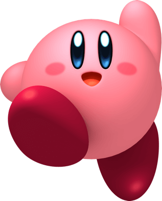

A Nintendo Co., Ltd. (任天堂株式会社 Nintendō Kabushiki Gaisha?) é uma desenvolvedora e publicadora japonesa de jogos eletrônicos e consoles sediada em Quioto. Foi fundada em setembro de 1889 pelo artesão Fusajiro Yamauchi e originalmente era uma fabricante de cartas de baralho tradicionais japonesas. Desde o lançamento da Nintendo Entertainment System™ há mais de 30 anos e até ao futuro, a missão contínua da Nintendo é a criação de experiências de entretenimento únicas capazes de colocar sorrisos nos rostos de pessoas em todo o mundo.
Conheça todos os consoles da Nintendo

A série Color TV-Game de cinco consoles de videogame domésticos dedicados foi criada pela Nintendo e lançada apenas no Japão. A Nintendo vendeu três milhões de unidades dos primeiros quatro modelos: um milhão de unidades de cada um dos dois primeiros modelos, Color TV-Game 6 e 15; e meio milhão de unidades de cada um dos dois modelos seguintes, Block Breaker e Racing 112. A série Color TV-Game tem os maiores números de vendas de toda a primeira geração de consoles de videogame. Os sistemas podem funcionar com baterias C ou um adaptador AC. É também o primeiro console a ser lançado pela Nintendo.

A série Game & Watch foi o primeiro grande sucesso da Nintendo no ramo dos jogos eletrônicos, que produziu a série até o ano de 1991, até a popularização do Game Boy. No total, foram produzidos 59 aparelhos para a venda e mais um que só poderia ser adquirido por sorteio, cada aparelho tinha apenas um jogo ou dois, dependendo do modelo. Vinham com tela de cristal líquido (alguns com 2 telas), utilizavam bateria do tipo LR44. Os títulos variavam entre criações originais e remontagens (com personalidade própria) de sucessos dos fliperama. Os jogos Game & Watch mais sofisticados, como o Donkey Kong lançado em 1982, foram os primeiros dispositivos da Nintendo a usar o direcional em forma de cruz do lado esquerdo, o formato serviu de inspiração para o controle do NES e o Game Boy, esse formato passou a ser adotado pelos controles por toda indústria de videogames domésticos a partir daí. O formato dos aparelhos da série com duas telas serviu de inspiração para o Nintendo DS. O Game & Watch tem 10 séries (uma de 1998-2008).
O Nintendo Entertainment System (NES, popularmente chamado de Nintendinho no Brasil) é um console de videogame de 8 bits lançado na América do Norte, Europa, Ásia, Austrália e Brasil. O NES/Famicom foi o videogame de maior sucesso comercial na sua época, ajudou a indústria de videogames a se recuperar da crise de 1983 e estabeleceu novos padrões que seriam seguidos pela indústria. Também foi o primeiro console a ser produzido por terceiros, o que ajudou a divulgar o sistema em todo o mundo. O NES também foi um dos primeiros consoles a se apoiar em jogos feitos por terceiros (não só pela própria fabricante). Em 2020, o NES encontra-se em 12º lugar na lista de consoles mais vendidos de todos os tempos. ficando atrás da Nintendo DS, PlayStation 2, Game Boy, PlayStation, Wii, Game Boy Advance e PlayStation Portable.

O Game Boy (ゲームボーイ Gēmu Bōi?) é um console portátil, lançado em 21 de abril de 1989 no Japão, é o primeiro console da linha Game Boy, foi criado por Gunpei Yokoi e pela Nintendo Research & Development 1, versões redesenhadas do console foram lançadas em 1996 e em 1998, o Game Boy Pocket e o Game Boy Light (somente para o Japão) O Game Boy é o segundo portátil da Nintendo, criado após a linha Game & Watch lançada em 1980. A diferença é que o Game Boy rodava diferentes games bastando apenas trocar os cartuchos inseridos. Seus principais concorrentes eram o Game Gear da Sega, o lynx da Atari e o TurboExpress, contudo teve uma aceitação muito maior que a dos concorrentes.

O Super Nintendo Entertainment System é o segundo console de mesa da Nintendo, sucessor do Nintendo Entertainment System (NES). O console apresentou gráficos e recursos de som avançados em comparação com outros consoles na época. O SNES foi um sucesso mundial, tornando-se o console mais vendido da época apesar de seu início relativamente tardio e a competição feroz que enfrentou na Europa e América do Norte. O SNES permaneceu popular até a era de 32 bits e continua a ser popular entre os fãs, colecionadores, retro gamers e entusiastas de emulação, alguns dos quais ainda estão fazendo imagens ROM homebrew. O sucesso de sua venda foi superior a 50 milhões de unidades por todo o mundo.

O Virtual Boy é um console portátil projetado por Gunpei Yokoi (pai de criações famosas como Game & Watch e Game Boy), que foi lançado em agosto de 1995 e se tornou o maior fracasso da Nintendo. Com um processador de 32 bits (o primeiro portátil da história a apresentar tal processador, seis anos antes do Game Boy Advance) e duas telas no formato de um óculos apoiado sobre um tripé, o portátil oferecia gráficos 3D, em uma tentativa de se aproveitar da moda de "realidade virtual" que assolava o mundo na época. Por isso, alguns nintendistas consideram o Virtual Boy um console "portátil".

Nintendo 64 (com a grafia estilizada NINTENDO64, e abreviação N64), foi um console de videogame da quinta geração, lançado em 23 de junho de 1996 no Japão. Lançado como um console com gráficos de 64 bits. O Nintendo 64 foi o último grande console doméstico a utilizar cartucho até o Nintendo Switch, lançado em 2017

Prometendo um sistema poderoso que poderia usar toda a biblioteca da família Game Boy, a Nintendo trouxe o GBA para garantir a sua supremacia no mercado dos consoles portáteis. Não deu outra: mais de 80 milhões de unidades vendidas e uma leva de títulos de fazer inveja a qualquer videogame. Além de ter novas versões de séries icônicas como Pokémon, The Legend of Zelda e Metroid, o pequeno notável ainda ganhou Sonic, Splinter Cell, Golden Sun, entre outros clássicos. Suas variações apenas aumentaram a sua popularidade, o fazendo se tornar um senhor console, mesmo em um pacote tão pequeno.
.jpg)
O GameCube é o primeiro console da Nintendo a usar discos ópticos como meio de armazenamento principal. Os discos são do formato miniDVD e o sistema não foi projetado para reproduzir DVDs ou CDs de áudio em tamanho real, diferentemente de seus concorrentes, sendo focado em jogos. A recepção do GameCube na época era geralmente positiva. O console foi elogiado por seu controle, extensa biblioteca de software e jogos de alta qualidade, mas foi criticado por seu design e falta de recursos. A Nintendo vendeu 21,74 milhões de unidades GameCube em todo o mundo antes de o console ser descontinuado em 2007.

O Nintendo DS é um console de videogame portátil desenvolvido e produzido pela Nintendo, lançado em 2004. Ele é visualmente distinto por seu design abre e fecha, e a presença de duas telas, sendo a inferior sensível ao toque. O sistema também possui um microfone embutido, e tem suporte a conexão sem-fio via Wireless Local, permitindo uma interação entre os jogadores dentro de uma pequena área (9-30 metros, dependendo das condições), ou pelo Nintendo Wi-Fi Connection, que permite multiplayer online com jogadores de todo o mundo.

Antes de seu anúncio oficial, o codinome do Wii era Revolution. A Nintendo sabia muito bem o que iria acontecer na indústria de games quando o console fosse lançado. Porém, o que vimos foi muito mais do que uma revolução, foi um fenômeno. De repente, todas as empresas queriam um pedaço desse novo ramo dos sensores de movimento. Por causa de seus controles intuitivos com poucos botões (em comparação aos concorrentes), o Wii conseguiu alcançar todo o tipo de pessoa, desde os mais novos aos mais velhos. Títulos como Wii Sports, Mario Kart Wii e Wii Fit estouraram no quesito popularidade. Enquanto isso, jogos como Super Mario Galaxy, Xenoblade Chronicles e No More Heroes agradaram os fãs mais hardcore.

Para o sucessor do DS, a Big N decidiu manter muitos dos mesmos estilos de jogos enquanto melhorava todos os outros quesitos no aparelho. É claro que algo ainda precisava ser totalmente inovador, então foi a possibilidade de curtir jogos em 3D sem óculos o grande chamativo do Nintendo 3DS. Com funcionalidades variadas desde o Street Pass (função que oferecia bônus se mantivesse o portátil no estado sleep) a jogatina online, o console obteve um estrondoso sucesso para a Nintendo. Mais de 70 milhões foram vendidas ao redor do mundo. Sua biblioteca é bastante completa, há obras como Super Mario 3D Land, Tomadachi Life, Resident Evil Revelations e a primeira versão portátil de um Super Smash Bros.

Mesmo sendo considerado um fracasso colossal com menos de 14 milhões de unidades vendidas, o Nintendo Wii U é um console que tinha muito potencial. O primeiro sistema da Big N a usar saída em HD, o videogame tem como principal controle o Gamepad, um periférico com tela de toque própria. Além disso, ele tem total retrocompatibilidade com o Wii, desde jogos a acessórios. Títulos como Super Mario 3D World e Splatoon são ótimos, mas não foram o suficiente para prender a atenção dos jogadores. Para sanar as dificuldades em vendas que a empresa tinha na época, a Nintendo decidiu lançar o sucessor do Wii U um pouco mais cedo.

O primeiro console totalmente híbrido da Nintendo chegou com uma pequena desconfiança depois do fracasso do Wii U, porém o Switch mostrou-se uma ideia forte o suficiente para se tornar um dos maiores êxitos da companhia. Seu design que permite a jogatina tanto na televisão quanto em formato portátil o ajudou a reunir popularidade em diversos países. Além disso, por causa de uma biblioteca em constante expansão, o sistema conseguiu trazer de volta todos os tipos de jogadores. Sendo assim, se um videogame tem uma forte base instalada, as desenvolvedoras passam a produzir jogos com maior frequência. É desse jeito que o Switch já tem clássicos como Super Mario Odyssey, The Legend of Zelda: Breath of the Wild, Shin Megami Tensei V, Monster Hunter Rise, Ori and the Will of the Wisps, entre muitos outros.
Alguns dos personagens mais conhecidos
Kirby
Picachu

Yoshi

Link

Mário e Luigi

Samus